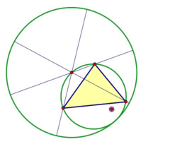

MC4010 - Discrete Mathematics-E2021
 Welcome to Discrete Mathematics!
Welcome to Discrete Mathematics!
Discrete mathematics serves as the mathematical backbone of computer engineering, providing the essential tools and concepts for understanding and solving a wide range of computational problems. In this course, computer engineering students will explore the foundational principles of discrete mathematics, from sets and logic to graph theory and algorithm analysis. By developing a strong grasp of these discrete mathematical concepts, students will be better equipped to design and analyze computer systems, develop efficient algorithms, and address complex engineering challenges within the world of computing.
Discrete mathematics finds extensive application in computer engineering, where it plays a pivotal role in the design and optimization of digital circuits, data structures, and algorithms. For instance, understanding set theory and logic is crucial when designing digital logic gates and circuits. Graph theory is instrumental in network design and routing algorithms, ensuring efficient data transmission and connectivity. Combinatorics aids in analyzing data compression techniques, error correction codes, and encryption algorithms, essential for data security. Algorithm analysis and complexity theory enable computer engineers to assess the efficiency of algorithms and make informed choices in software and hardware design. In sum, a strong foundation in discrete mathematics equips computer engineering students with the intellectual tools needed to develop cutting-edge technologies and solutions in the rapidly evolving field of computer engineering.
The approach to understanding statistics is no different from any other subject. Plan ahead, work steadily and you can achieve maximum success for your effort. Please contact me if you have any questions about the teaching and learning format for this course.
Discrete Mathematics is a course for you to learn about common discrete mathematical ideas used in engineering. You don’t need a strong mathematical background to succeed in this course. The course syllabus and other details are given below. This course is intended for students capable of and interested in progressing through the concepts of discrete mathematics in more depth and at an accelerated rate.
We hope you enjoy taking this course as much as we have enjoyed putting it together. We are keen to get feedback from you on things you like as well as anything you don’t like. The approach to understanding discrete mathematics is no different from any other subject. Plan ahead, and work steadily and you can achieve maximum success for your effort.
We wish you well in your studying.
Syllabus
Course Overview:
This course covers functions, relations and sets, Basic logic, proof techniques, basic counting and discrete probability.
Expected outcomes:
By the end of the course, the student should be able to understand the fundamental mathematical; concepts and terminology, analyse recursive definitions, describe different types of discrete structures, apply techniques for constructing mathematical proofs, illustrated by discrete mathematics examples, identify the basics of discrete probability and number theory and its applications.
Texts:
Discrete mathematics and its applications / Kenneth H. Rosen. — 7th ed. ISBN 0–07–338309–0
Evaluation:
The final letter grade for this course will be determined by each method of assessment weighted as follows:
- In course assessments (50%)
- Assignment (20%)
- Mid-semester assessment (30%)
- End of course examination (50%)
Attendance Policy:
Regular attendance is a fundamental aspect of your success in this course. To maintain an engaged and collaborative learning environment, a minimum attendance rate of \(80\%\) is compulsory. Attendance will be recorded during each class session, and weekly updates on attendance percentages will be posted on the course platform for your reference. If we find that your attendance percentage falls below the required threshold due to extenuating circumstances, you must seek approval from your academic advisor. This approval is mandatory for participation in any examinations, including assignments. It is essential to communicate proactively with your advisor to discuss the reasons for any attendance issues and to devise a plan for catching up on missed coursework. Please note that exceptions will be considered on a case-by-case basis, with a strong emphasis on maintaining the integrity of the learning experience for all students.
